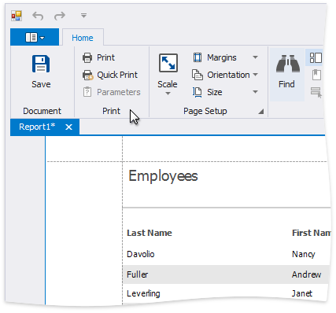

Preview, Print and Export Reports
Preview a Report
To switch a report to the print preview mode, click the Preview tab. You will see your report populated with data and broken down into pages, as specified.

Note
To learn more about the options available in the print preview mode, refer to the Print Preview for WinForms section of this documentation.
Print a Report
When in the Print Preview mode, you can print out your report using the appropriate menu and toolbar commands.

Export a Report
When in the Print Preview mode, you can export your report to files in different formats. The resulting files can either be saved to the hard drive or sent by e-mail.

The following documents describe the basics of report exporting and format-specific export options.